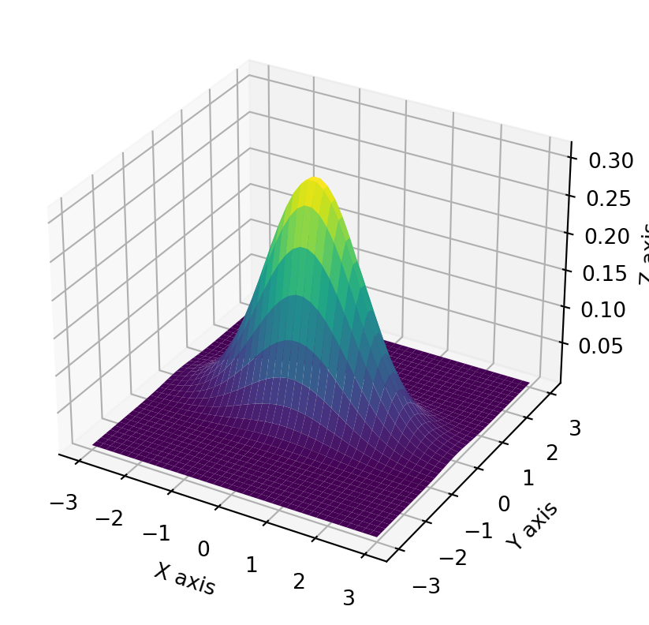
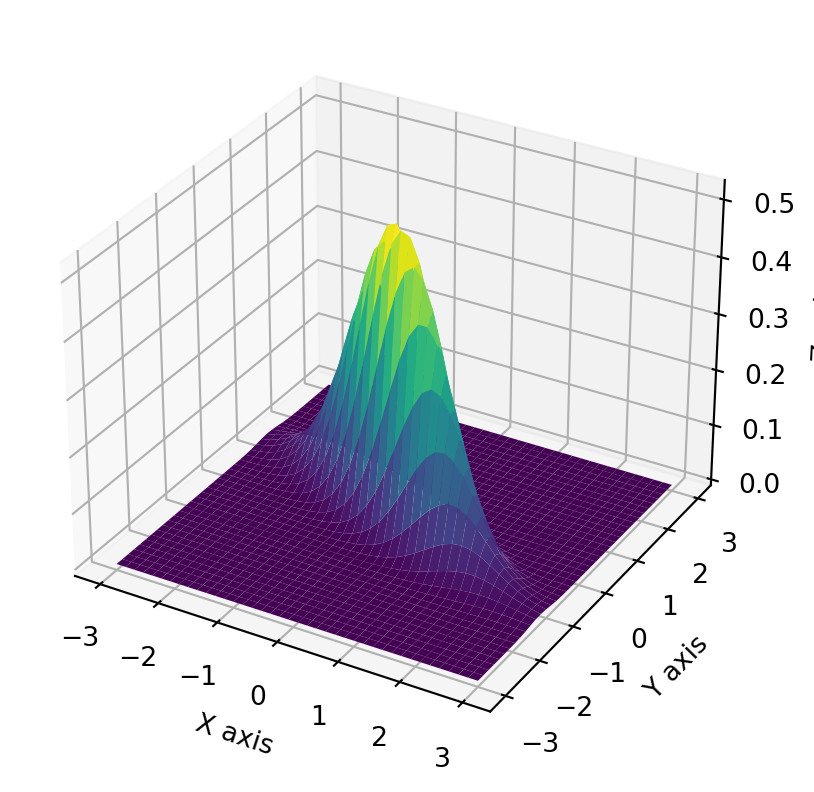
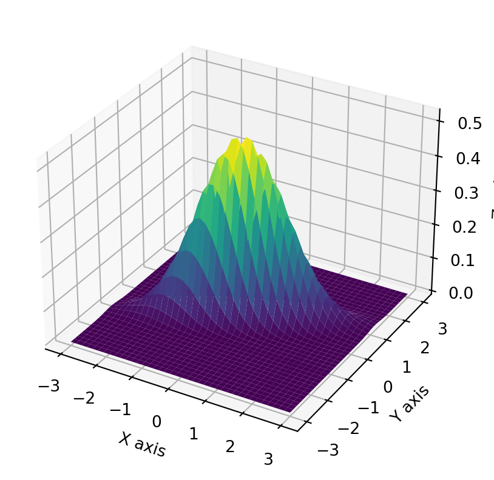

\[\mathbb{E}[X] = \int_{-\infty}^{\infty}x f(x) dx\]Variance\(Var(X)\) is given by
\[Var(X) = \mathbb{E}(X^2) - \mathbb{E}{{(X)}^2}\]\[Var(X) = \int_{-\infty}^{\infty}(x-\mathbb{E}[X])^2 f_X(x) dx\]Higher Moments\(\mathbb{E}(X^n)\) is given by
\[\mathbb{E}(X^n) = \int_{-\infty}^{\infty}x^n f_X(x) dx \]Characteristic function(CHF)\(\phi_X(u)\) for \(u \in \mathbb{R}\) is given by
Moment generating function\(\mathcal{M}_X(u)\) is given by \[\mathcal{M}_X(u) = \phi_X(-iu)= \mathbb{E}[e^{uX}] = \int_{-\infty}^{\infty}e^{ux}f(x)dx \]Cumulant characteristic function\(\zeta_X(u)\) is given by \[\zeta_X(u) = log\mathbb{E}[e^{iux}] = log\phi_X(u)\]
Central moments$ _l$ is given by \(\mathbb{E}[(X-\mu)^l]\)
Skewness \(S(x)\) and Kurtosis \(K(x)\) are the normalised \(3^{rd}\) and \(4^{th}\) central moments of a distribution respectively. The normalization factors are \(\sigma^3\) and \(\sigma^4\) respectively where \(\sigma\) is the standard deviation of X.
The quantity \(K(x) - 3\) is called the excess kurtosis since \(K(x) = 3\) is the kurtosis for a normal distribution.
Let \(\{x_1,x_2,x_3 ....x_T\}\) be a random sample of X with T observations
Sample Mean\(\hat\mu_x\) is given by \[\frac{\sum_{t=1}^Tx_t}{T}\]Sample Variance\(\hat\sigma_x\) is given by \[\frac{\sum_{t=1}^T(x_t - \hat\mu_x)^2}{T-1}\]Sample Skewness\(\hat S_x\) is given by \[\frac{\sum_{t=1}^T(x_t - \hat\mu_x)^3}{(T-1)\hat\sigma_x^3}\]Sample Kurtosis\(\hat K_x\) is given by \[\frac{\sum_{t=1}^T(x_t - \hat\mu_x)^4}{(T-1)\hat\sigma_x^4}\]
Univaiate Distributions
Normal Distribution
A random variable \(X\) is said to be normally distrbuted if it has a probability density function as follows
\(\mu\) and \(\sigma\) are the mean and variance of the distribution respectively
The case where \(\mu =0\) and \(\sigma = 1\) is called standard normal distribution and its PDF is given by \[ f_X(x) =\frac{1}{\sqrt{2\pi}}e^{\frac{-x^2}{2}}\]
import numpy as npimport math import matplotlib.pyplot as pltimport scipy.stats as stfrom mpl_toolkits import mplot3ddef plotNormalPDF_CDF_CHF(mu ,sigma): i =complex(0,1) chf =lambda u : np.exp(i*mu*u -(sigma**2)*u*u/2) pdf =lambda x : st.norm.pdf(x,mu,sigma) cdf =lambda x : st.norm.cdf(x,mu,sigma) x = np.linspace(5,15,100) u = np.linspace(0,5,250)print(type(pdf))# figure 1 ,PDF plt.figure(1) plt.plot(x,pdf(x)) plt.grid() plt.xlabel('x') plt.ylabel('PDF')# figure 2 ,CDF plt.figure(2) plt.plot(x,cdf(x)) plt.grid() plt.xlabel('x') plt.ylabel('CDF')# figure 3 ,CHF plt.figure(3) ax = plt.axes(projection ='3d') chfV = chf(u) x = np.real(chfV) y = np.imag(chfV) ax.plot3D(u,x,y,'red') ax.view_init(30 ,-120)plotNormalPDF_CDF_CHF(10,1)
<class 'function'>
Log Normal Distibution
A random Variable \(X\) is said to have log normal distibution if \(Y = \ln{X}\) and \(Y\) is normally distributed.
The PDF of log normal distribution is given by
\[f_X(x) = \frac{1}{x\sigma\sqrt{2\pi}}e^{(-\frac{(\ln{x} -\mu)^2}{2{\sigma}^2})}\] where \(\mu\) and \(\sigma\) are the mean and variance of \(Y(\ln X)\) respectively.
Hence the mean \(\mu^*\) and variance \(\sigma^*\) of X are as follows
\[\mu^* = e^{\mu + \frac{1}{2}\sigma^2}\]\[\sigma^* = e^{2\mu + 2\sigma^2} - e^{2\mu +\sigma^2}\] Important thing to note here is that \(x\) can take values in \((0,\infty)\) only.
Multivariate Distributions
Correlation
The correlation coefficient between two random variables \(X\) and \(Y\) is defined as \[ \rho_{x,y} = \frac{Cov(X,Y)}{\sqrt{Var(X)Var(Y)}} = \frac{E[(X-\mu_x)(Y-\mu_y)]}{\sqrt{E(X-\mu_x)^2E(Y-\mu_y)^2}}\]
The sample correlation is given by \[ \hat\rho_{x,y} = \frac{\sum_{t=1}^{T}(x_t - \bar{x})(y_t - \bar{y})}{\sqrt{\sum_{t=1}^T(x_t - \bar{x})\sum_{t=1}^T(y_t - \bar{y})}}\]
Two-dimensional densities.
The joint CDF of two random variables ,\(X\) and \(Y\) ,is the function \(F_{X,Y}(.,.):\mathbb{R}^2 \rightarrow [0,1]\),which is defined by:
\[ F_{X,Y}(x,y) = \mathbb{P}[X\leq{x},Y\leq{y}]\] If \(X\) and \(Y\) are continous variables, then the joint PDF of X and Y is a function of \[f_{X,Y}(x,y) = \frac{\partial^2{F_{X,Y}(x,y)}}{\partial{x}\partial{y}} \]Bivariate Normal density functions
import numpy as npimport matplotlib.pyplot as plt#from matplotlib.mlab import bivariate_normal bivariate_normal seems to be deprecateddef bivariate_normal(X, Y, sigmax=1.0, sigmay=1.0, mux=0.0, muy=0.0, sigmaxy=0.0):""" Bivariate Gaussian distribution for equal shape *X*, *Y*. See `bivariate normal <http://mathworld.wolfram.com/BivariateNormalDistribution.html>`_ at mathworld. """ Xmu = X-mux Ymu = Y-muy rho = sigmaxy/(sigmax*sigmay) z = Xmu**2/sigmax**2+ Ymu**2/sigmay**2-2*rho*Xmu*Ymu/(sigmax*sigmay) denom =2*np.pi*sigmax*sigmay*np.sqrt(1-rho**2)return np.exp(-z/(2*(1-rho**2))) / denomdef BivariateNormalPDFPlot():# Number of points in each direction n =40;# parameters mu_1 =0; mu_2 =0; sigma_1=1; sigma_2=0.5; rho1=0.0 rho2=-0.8 rho3=0.8 x = np.linspace(-3.0,3.0,n) y = np.linspace(-3.0,3.0,n) X,Y =np.meshgrid(x,y) Z =lambda rho:bivariate_normal(X,Y,sigma_1,sigma_2,mu_1,mu_2,rho*sigma_1*sigma_2) fig =plt.figure(1) ax = fig.add_subplot(projection='3d') ax.plot_surface(X, Y, Z(rho1),cmap='viridis',linewidth=0) ax.set_xlabel('X axis') ax.set_ylabel('Y axis') ax.set_zlabel('Z axis') plt.show() fig =plt.figure(2) ax = fig.add_subplot(projection='3d') ax.plot_surface(X, Y, Z(rho2),cmap='viridis',linewidth=0) ax.set_xlabel('X axis') ax.set_ylabel('Y axis') ax.set_zlabel('Z axis') plt.show() fig =plt.figure(3) ax = fig.add_subplot(projection='3d') ax.plot_surface(X, Y, Z(rho3),cmap='viridis',linewidth=0) ax.set_xlabel('X axis') ax.set_ylabel('Y axis') ax.set_zlabel('Z axis') plt.show()BivariateNormalPDFPlot()



Hypothesis Testing
t-statistic is the ratio of departure of the estimated value of a paramater from its hypothesized value to it’s standard error.
It is used when the sample size is small or the population standard deviation is unknown.
Let \(\hat\beta\) be an estimator of parameter \(\beta\) in some statistical model. Then the t-statistic is given by \[ t_{\hat\beta} = \frac{\hat\beta - \beta_0}{s.e(\hat\beta)}\] where \(s.e(\hat\beta)\) is the standard error of the estimator \(\hat\beta\) for \(\beta\) and \(\beta_0\) is a non-random , know constant , which may or maynot match actual unknow parameter value \(\beta\)